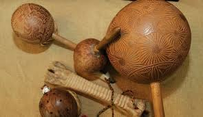

Dependiendo del periodo histórico y de las culturas las evidencias arqueológicas de la música en cada una varían, y prácticamente las investigaciones se enfocan a los períodos clásicos de las culturas mayores (Azteca y Maya por ejemplo). Si bien no es posible saber cuál era el sonido original de la música prehispánica en general y de cada pueblo en lo particular, de acuerdo a ciertas investigaciones «se ha podido intuir su sonoridad gracias a las expresiones autóctonas, las cuales han sobrevivido por cerca de 500 años, como parte de algunas festividades y ritos de Oaxaca, del Totonacapan y de la península de Yucatán». Como es el caso de flautas que pueden emitir tonos y semitonos, y otros instrumentos que pueden tocar cromatismos.
Por otra parte, es indudable que el repertorio musical y otras piezas no vocales, tenían un empleo muy variado en ceremonias, de guerras, así como en fiestas y juegos, con sentido poético y amoroso. Entre los aztecas, la música se enseñaba en el lugar donde se guardaban los instrumentos musicales la Mixcoacalli (Casa de la serpiente de nubes) y en la Cuicacalli (Casa del canto) donde se enseñaba danza, poesía y música.